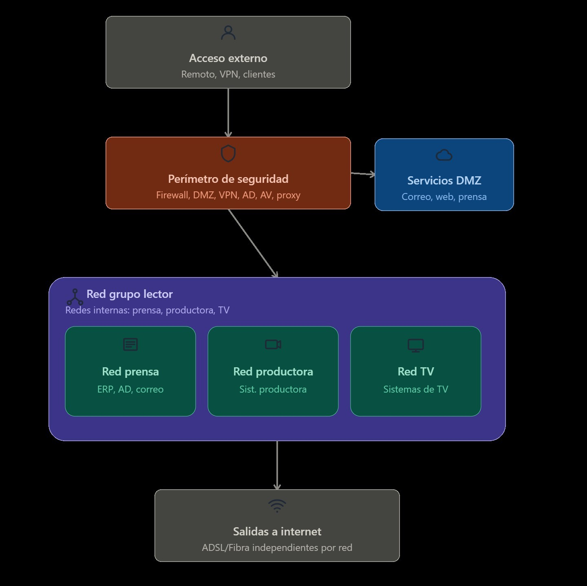
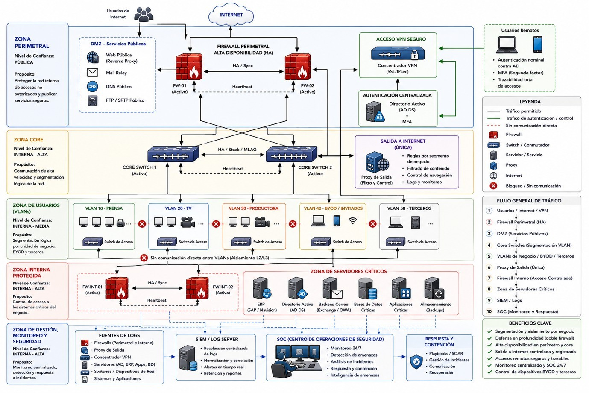
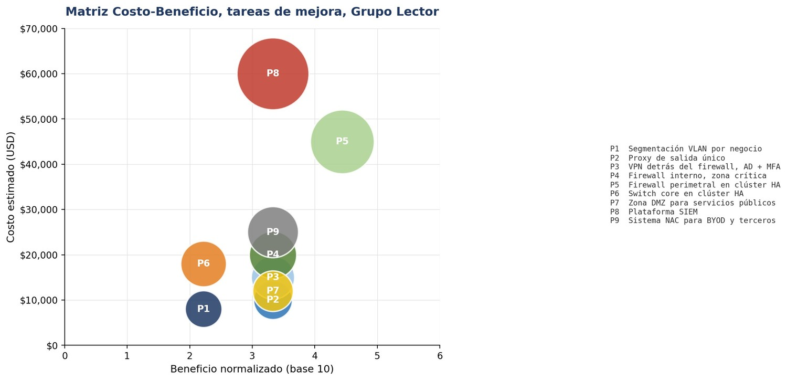

El punto de partida
Una empresa que creció rápido, y una red que creció con ella sin orden
Grupo Lector es una corporación con sede en Barcelona dedicada a la prensa, la televisión y la producción de contenido audiovisual. Como ocurre con muchas empresas que crecen a base de adquirir otras compañías, su infraestructura tecnológica terminó siendo heterogénea y descentralizada: distintas plataformas, distintas aplicaciones de negocio y distintos accesos remotos, todo coexistiendo sin una administración unificada.
Ya contaba con controles razonables —firewalls con redundancia, un directorio de usuarios centralizado, una zona separada para los servicios publicados a internet—. El problema no era la ausencia total de seguridad, sino que esa seguridad tenía huecos concretos y bien identificables.
Cómo estaba la red
Todo conectado con todo, dentro de la misma red
El diagrama siguiente resume la arquitectura de partida. Tras el perímetro de seguridad (firewall, VPN, antivirus), las tres áreas de negocio —Prensa, Productora y TV— comparten literalmente la misma red interna, sin ninguna pared que las separe. A eso se suman salidas a internet independientes por fibra o ADSL, que no pasan por ese mismo perímetro de seguridad.

Por qué esto es un problema
Si un solo equipo de Prensa se ve comprometido —por ejemplo, con un correo malicioso—, no hay ninguna barrera interna que impida que ese problema salte directamente a los sistemas de Productora o de TV. Es como si, dentro de un edificio con una sola puerta de entrada vigilada, todas las oficinas interiores no tuvieran puertas propias.
Cómo queda la red
La misma empresa, ahora dividida en compartimentos con una razón cada uno
La arquitectura propuesta no sustituye lo que ya existía: lo reorganiza en capas, cada una con un propósito concreto. En el perímetro, un doble firewall trabaja en pareja para que la caída de uno no deje a la empresa sin protección. Justo detrás, la red se divide en compartimentos independientes —uno por cada área de negocio, y otros separados para dispositivos personales o de terceros—, de forma que ninguno puede hablar directamente con los demás. Los sistemas más sensibles —el sistema de gestión, el directorio de usuarios, el correo, las bases de datos— quedan además detrás de un segundo firewall propio, como una caja fuerte dentro de la caja fuerte. Y por encima de todo eso, una capa de vigilancia centralizada reúne los registros de toda la red y los revisa de forma continua.

Para qué sirve esto en una empresa
Incluso si un área queda comprometida, el resto sigue funcionando de forma aislada —como los compartimentos estancos de un barco, diseñados para que una vía de agua en uno no hunda el barco entero. Y la capa de vigilancia significa que, por primera vez, alguien se entera de un incidente en minutos, no semanas después.
Decidir por dónde empezar
Ordenar las nueve mejoras según el riesgo que resuelven, no según lo que parezca más urgente
Rediseñar la red en el papel es solo la mitad del trabajo: hay que decidir en qué orden se construye. Cada una de las nueve mejoras se comparó contra los riesgos ya identificados en el análisis previo, y se le asignó una prioridad. Tres de ellas —dividir la red por áreas de negocio, centralizar la salida a internet, y poner el acceso remoto detrás del firewall con verificación en dos pasos— resuelven, exactamente, las tres debilidades más urgentes de toda la arquitectura.
| Cód. | Tarea | Debilidad que resuelve | Prioridad |
|---|---|---|---|
| P1 | Segmentación en VLAN por negocio | Ausencia de segmentación entre negocios | Muy alta |
| P2 | Proxy de salida único con reglas por segmento | Salidas a internet fuera del perímetro protegido | Muy alta |
| P3 | Concentrador VPN detrás del firewall, con AD y MFA | Acceso VPN sin inspección del firewall | Muy alta |
| P4 | Firewall interno para ERP, Directorio Activo y correo | Sistemas críticos sin capa de protección adicional | Alta |
| P5 | Clúster de firewall perimetral en alta disponibilidad | Punto único de fallo en el perímetro | Alta |
| P6 | Clúster de switches core en alta disponibilidad | Punto único de fallo en la conmutación central | Media |
| P7 | Zona DMZ para servicios públicos | Publicación directa de servicios hacia internet | Alta |
| P8 | Plataforma SIEM integrada con los dispositivos de seguridad | Ausencia de monitoreo centralizado | Alta |
| P9 | Sistema NAC y políticas de gestión para BYOD y terceros | Dispositivos sin control centralizado | Media |
Para qué sirve esto en una empresa
Ordenar por riesgo, y no por lo primero que se ocurra, significa que el dinero y el tiempo se gastan primero en tapar los huecos que de verdad podrían costarle caro a la empresa, dejando lo importante-pero-no-urgente para una segunda fase.
Ponerle precio a cada tarea
Nueve mejoras, un presupuesto de 213.000 USD
Cada tarea se costeó por separado, considerando equipos, licenciamiento, implementación y el primer año de soporte cuando corresponde. La plataforma de monitorización centralizada (SIEM más un equipo dedicado a vigilarla, el SOC) concentra, con diferencia, la mayor inversión individual —porque es la única pieza de todo el portafolio que aporta capacidad real de detectar un incidente mientras ocurre, en lugar de solo prevenirlo.
| Cód. | Tarea | Costo estimado |
|---|---|---|
| P1 | Segmentación VLAN | $8.000 |
| P2 | Proxy de salida único | $10.000 |
| P3 | VPN detrás del firewall, con AD y MFA | $15.000 |
| P4 | Firewall interno para servidores críticos | $20.000 |
| P5 | Firewall perimetral en clúster HA | $45.000 |
| P6 | Switch core en clúster HA | $18.000 |
| P7 | Zona DMZ formal | $12.000 |
| P8 | Plataforma SIEM más SOC | $60.000 |
| P9 | Sistema NAC para BYOD y terceros | $25.000 |
| Total | $213.000 | |
Cruzar costo y beneficio
Lo más urgente no siempre es lo más caro
Cada tarea se comparó también contra una lista fija de beneficios esperados —reduce el movimiento lateral, elimina un punto único de fallo, protege los sistemas críticos, entre otros— y se contó cuántos de ellos cubre realmente. Esa puntuación, cruzada con el costo, confirma algo que ya sugería la tabla de prioridades: las tres tareas más urgentes (P1, P2 y P3) están entre las más económicas de todo el portafolio.
| Cód. | Costo | N.º de beneficios que cumple | Beneficio |
|---|---|---|---|
| P1 | $8.000 | 2 | Bajo |
| P2 | $10.000 | 3 | Bajo |
| P3 | $15.000 | 3 | Bajo |
| P4 | $20.000 | 3 | Bajo |
| P5 | $45.000 | 4 | Medio |
| P6 | $18.000 | 2 | Bajo |
| P7 | $12.000 | 3 | Bajo |
| P8 | $60.000 | 3 | Bajo |
| P9 | $25.000 | 3 | Bajo |

Un matiz importante
Que la plataforma SIEM (P8) obtenga una puntuación de beneficio relativamente baja en esta tabla no la vuelve prescindible: es la única tarea de las nueve capaz de detectar un incidente mientras sucede, algo que ninguna otra tarea del portafolio cubre. Un número bajo en esta escala señala un beneficio concentrado en un solo criterio de alto valor, no una tarea de poca importancia.
En resumen
Reorganizar lo que ya existe, antes de comprar algo nuevo
Grupo Lector no necesita sustituir su infraestructura: necesita reorganizarla y completarla de forma priorizada según el riesgo real de cada componente. Las tres tareas que resuelven las debilidades más urgentes representan poco más del 15% de la inversión total, lo que confirma que la prioridad de ejecución depende del riesgo que cada tarea reduce, no del tamaño de su presupuesto.
9 tareas de mejora · $213.000 de inversión total estimada · 3 tareas de prioridad muy alta concentran ~15% del presupuesto